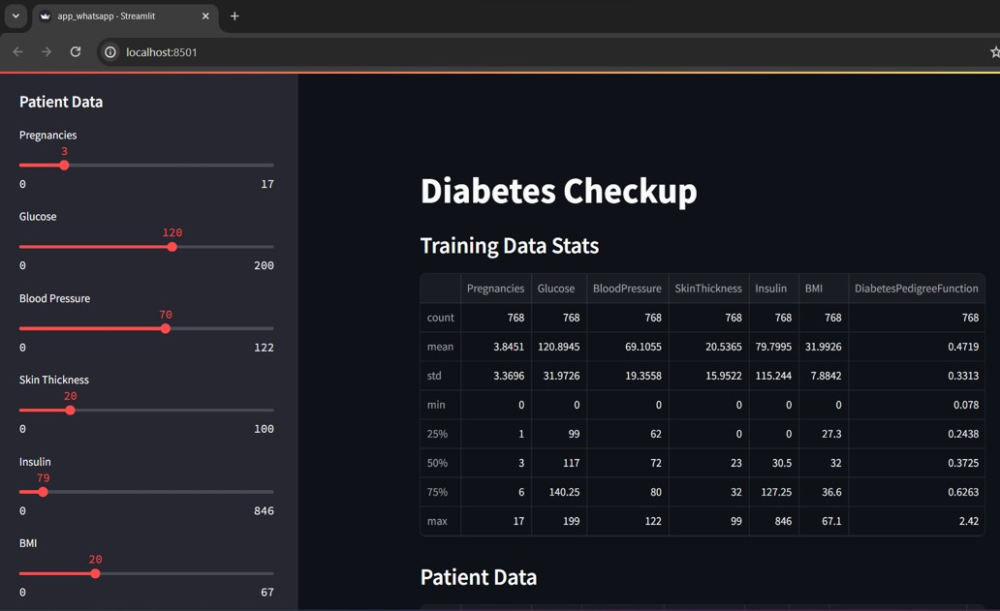
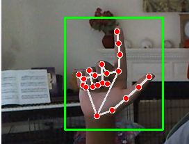
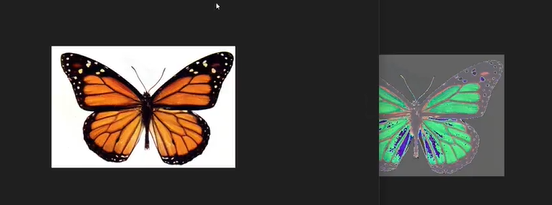
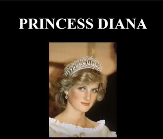
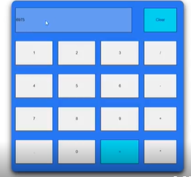
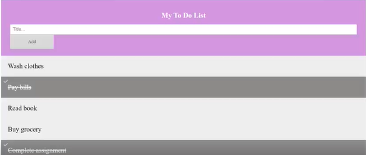

Predictive Analytics for Diabetes Detection

- Conducted thorough exploratory data analysis to understand patterns and insights from the dataset related to diabetes.
- Utilized ML models to predict diabetes, assessed model performance, and created a user-friendly interface using Streamlit.
Sign Language Detection

- Developed a sign language detection system using OpenCV.
- Utilized deep learning models to interpret and translate sign language gestures into text.
Pixel Manipulation for Image Encryption

- This Python script enables image encryption and decryption through two methods: RGB channel swapping and RGB value shifting.
- Users can choose to encrypt or decrypt images by specifying the image file path and selecting one of the available methods: swap or shift.
- The script ensures user interactivity by allowing continuous encryption or decryption of images.
Tribute Page

- This tribute page honors Princess Diana, presenting her life story with a centered title, an impactful image, and detailed paragraphs covering her royal ties, activism, and global influence.
- It includes a link for further exploration on Wikipedia, designed with a cohesive aesthetic for clarity and engagement.
Calculator

- This calculator project utilizes HTML, CSS, and JavaScript to create an interactive interface for performing basic arithmetic operations.
- The HTML structure employs a table element to organize buttons and display results.
- CSS styling enhances the interface with responsive button designs.
- JavaScript functions enable functionality such as input display, clearing the screen, and evaluating mathematical expressions.
To-Do List

- This HTML project creates a simple To-Do List application with the following features:
- Users can add tasks by typing into the input field and clicking "Add".
- Tasks can be marked as completed by clicking on them, which strikes through the text.
- Each task can be deleted by clicking on the "x" icon next to it.
- It uses basic HTML, CSS, and JavaScript to achieve these functionalities, providing a user-friendly interface for managing tasks.